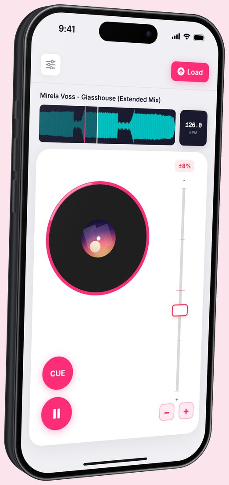
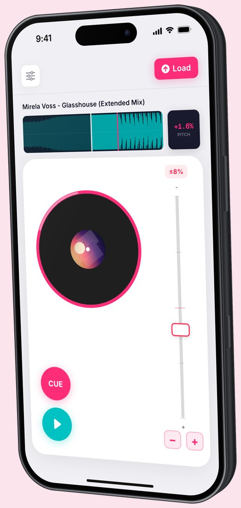
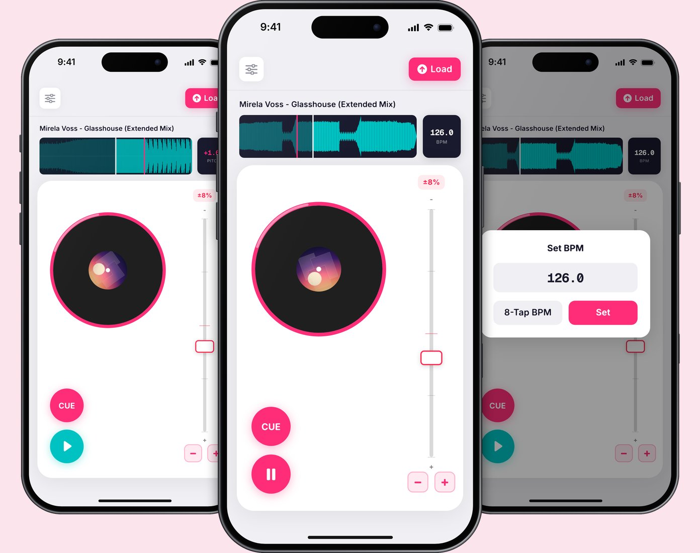

Everything you'd touch on a real turntable had to work on a small glass screen, so every control is big, colour-coded and sits where your hands already are.
Drag on the platter to scratch. Playback follows how fast your finger turns (one full turn a second is normal speed), and scratching nearer the centre goes faster, just like a real record.
Big cue and play buttons sit at the bottom of the deck in the app's pink and teal, so you can find them at a glance mid-mix.
A pitch fader with a choice of ranges, plus nudge buttons to pull a track back into time.
The waveform shows your cue point. BPM is detected automatically, or you can type it in or tap along for eight beats. Swipe the BPM display to switch to pitch percentage.
Phonidex runs on iPhone as a working SwiftUI prototype. Load a track, and the deck, waveform and tempo tools all respond to touch the way they would on a turntable.


